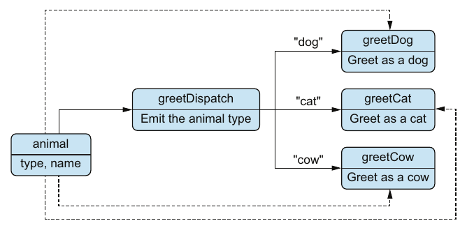

Chapter 13 · pp. 272–294
Polymorphism
Data-Oriented Programming, 1st Edition
Dave misses another OOP feature, polymorphism. On a day at his parents' house in the countryside, he and Theo distill what it is for: extensibility, adding a new case without changing existing code. A switch on a type field gives different behaviours but fails that test (pp. 273–277).
DOP gets polymorphism without objects through multimethods (pp. 277–281):
- A dispatch function defines the signature, validates the arguments and emits a dispatch value.
- A set of methods provide one implementation per dispatch value.
- Method declarations are decoupled from the multimethod's initialization, just as classes are from an interface, so new cases can live in other modules.
- A default method handles unknown dispatch values.
Because the dispatch function can emit any value, multimethods go beyond OOP (pp. 281–288):
- Single dispatch emits an argument's
typefield, mimicking class-based polymorphism. - Multiple dispatch emits a value built from several arguments: an animal's type and a language's type.
- Dynamic dispatch emits a value computed at run time: whether the animal's name is long.
Joe lists multimethod libraries for Python, Ruby, Java and C# (p. 289). Back at the office, Dave uses a multimethod for a real feature: author names formatted in HTML or Markdown, in italic, bold or both, depending on how many books the author wrote (pp. 289–293).
The chapter’s own outline (from the book’s table of contents)
- 13.1 The essence of polymorphism — p. 273
- 13.2 Multimethods with single dispatch — p. 277
- 13.3 Multimethods with multiple dispatch — p. 281
- 13.4 Multimethods with dynamic dispatch — p. 286
- 13.5 Integrating multimethods in a production system — p. 289
- Summary — p. 294
From the book
Introduction
The chapter shows three kinds of polymorphism, all with the same running example of animals that greet by making a sound and saying their name (p. 273). The animals are maps with type and name (listing 13.3, p. 275):
| Map | type | name |
|---|---|---|
myDog | "dog" | "Fido" |
myCat | "cat" | "Milo" |
myCow | "cow" | "Clarabelle" |
From the book
13.1 The essence of polymorphism
In OOP, Dave defines an IAnimal interface with a greet method, implemented by Dog, Cat and Cow (listing 13.1, p. 274). Polymorphism, he says, decouples an interface from its implementations (p. 273). Theo challenges him: what's the fundamental difference with a switch on animal.type? (listing 13.2, p. 274)
Dave's objections, and Theo's answers:
| Objection | Theo's fix |
|---|---|
An invalid map breaks greet | Validate with animalSchema (listing 13.4, p. 275) |
| Changing one animal's greeting means editing code for all animals | One function per animal, called from the switch (listing 13.5, p. 276) |
| Adding a new animal means modifying the original code | No fix: a switch can't do that, while OOP can add a class (p. 277) |
So the real benefit is the third one, extensibility (p. 277). The book adds that switch statements like these shouldn't be used in production; they're only a didactic step (p. 276). Theo asks Joe, who's about to give a talk at a tech conference, and gets one hint: look at multimethods (p. 277).
Vault note: the Java in listing 13.1 refers to animal.name inside each class, where only name (or this.name) is in scope, so it wouldn't compile as printed (p. 274).
From the book
13.2 Multimethods with single dispatch
A multimethod has a dispatch function and a set of methods (p. 277). For greet, greetDispatch emits the animal's type, and each value is handled by greetDog, greetCat or greetCow (figure 13.1, p. 278):


The example uses the JavaScript arrows/multimethod library: multi creates a multimethod, method adds a method (p. 278).
| Step | Code | Listing |
|---|---|---|
| Initialization | var greet = multi(greetDispatch);, where greetDispatch validates animal in dev and returns animal.type | 13.6, pp. 278–279 |
| Method declaration | greet = method("dog", greetDog)(greet); | 13.7, p. 279 |
| More methods | the same for "cat" and "cow" | 13.8–13.9, pp. 279–280 |
| Call | greet(myDog) → "Woof woof! My name is Fido" | 13.10, p. 280 |
| Default | greet = method(greetDefault)(greet); with no dispatch value; greet(myHorse) → "My name is Horace" | 13.11–13.12, p. 281 |
Points from the dialogue (pp. 279–281):
- Method declarations needn't be in the same module as the initialization. That decoupling is what makes multimethods extensible.
- Naming convention: the multimethod's name as prefix,
Dispatchas the dispatch function's suffix, a specific suffix per method. Names aren't important to the mechanism. - Under the hood, a hash map from dispatched values to methods.
- Validation in the dispatch function is a best practice, not mandatory. Without a matching method or default, the library throws a
NoMethodError.
Try it
Multimethod dispatch
Open full screen ↗ · the simulation is the vault’s own model of the mechanism the book describes.
From the book
13.3 Multimethods with multiple dispatch
Dave's general diagram makes the point: the dispatch function can emit any value, for example the types of two arguments (figure 13.2, pp. 281–282). Theo makes the animals polyglot. Languages are maps too, {type: "fr", name: "Français"} and {type: "en", name: "English"}, with their own schema (listings 13.13–13.14, p. 282).
greetLangDispatch(animal, language) validates both arguments as a tuple with prefixItems and returns [animal.type, language.type] (listing 13.15, pp. 283–284). Three animals times two languages give six methods, such as method(["dog", "fr"], greetLangDogFr) (figure 13.3; listing 13.16, pp. 283–285). The French methods use French onomatopoeia, "Ouaf Ouaf", "Miaou" and "Meuh" (p. 285).
| Call (listing 13.17, pp. 285–286) | Output |
|---|---|
greetLang(myDog, french) | "Ouaf Ouaf! Je m'appelle Fido et je parle Français" |
greetLang(myCat, english) | "Meow! I am Milo and I speak English" |
greetLang(myCow, french) | "Meuh! Appelle moi Clarabelle et je parle Français" |
The order of the elements in the dispatch array doesn't matter, but it must be consistent with the wiring of the methods (pp. 284–285). Dave agrees that this is more powerful than OOP polymorphism (p. 286).
From the book
13.4 Multimethods with dynamic dispatch
Dynamic dispatch is when the dispatch function returns a value that goes beyond its arguments' static types, such as a number or a Boolean (p. 286). Theo invents dysmakrylexia, difficulty pronouncing long words: animals whose name has more than five letters can't say it (p. 286).
dysGreetDispatch returns [animal.type, animal.name.length > 5] (listing 13.18, p. 287), with six methods: the true ones mention the name, the false ones only make the sound (figure 13.4; listing 13.19, pp. 287–288). In listing 13.20, Fido and Milo say only "Woof woof!" and "Meow!", while Clarabelle says "Moo! Call me Clarabelle" (p. 288).
Vault note: the dispatch box in figure 13.4 is labelled with figure 13.3's text (dysGreetLangDispatch, "animal, language", "Emit the animal and the language types"), though dysGreet takes only an animal and emits its type and whether the name is long. Note also the inversion: a long name is the case that mentions the name (pp. 287–288).
Joe's email on multimethods in other languages (p. 289):
| Language | Library | Generic data structures |
|---|---|---|
| JavaScript | arrows/multimethod | Yes |
| Java | Java Multimethod Framework | No |
| C# | Native, via dynamic | No |
| Python | multimethods | Yes |
| Ruby | Ruby multimethods | Yes |
From the book
13.5 Integrating multimethods in a production system
Nancy calls with a "tiny" feature. Since the DOP refactoring, tiny usually is easy (p. 289). Librarians should see authors, ordered by last name, in HTML or Markdown, with names formatted by how many books they've written (table 13.1, p. 290):
| Number of books | Prolificity level | Italic | Bold | HTML | Markdown |
|---|---|---|---|---|---|
| 10 or fewer | low | Yes | No | <i>…</i> | *…* |
| 11 to 50 | medium | No | Yes | <b>…</b> | **…** |
| 51 or more | high | Yes | Yes | <b><i>…</i></b> | ***…*** |
Theo delegates it to Dave, who sees it as dysmakrylexia again, with the length of an array instead of a string (p. 290). He represents a format as a plain string, "markdown" or "html", rather than a map (p. 290), and builds Author.myName (pp. 291–293):
- A helper,
Author.prolificityLevel(author), countsbookIsbnswith_.sizeand returns"low","medium"or"high"(listing 13.23). - The dispatch function validates
[author, format]and returns[Author.prolificityLevel(author), format](listing 13.23). - Six methods, one per level and format (listings 13.25 and 13.27).
Testing with "a mysterious author," Yehonathan Sharvit, with the ISBN of a data-oriented programming book, gives "<i>Yehonathan Sharvit</i>" and "*Yehonathan Sharvit*" (listings 13.28–13.29, p. 293).
Vault note: listing 13.21's textFormatSchema isn't a valid schema for a string (it lists name and type as if they were properties, with no "type" or "properties"); the args schema in listing 13.23 uses {"enum": ["markdown", "html"]} instead. Listing 13.24 also shows <i>Yehonathan Sharvit<i> without the closing slash (pp. 290–292).
Try it
Author names by prolificity
Open full screen ↗ · the simulation is the vault’s own model of the mechanism the book describes.
Recap
Trade-offs at a glance
| Approach | Extensible without editing? | Dispatch on | Works on generic maps? |
|---|---|---|---|
switch on type | No (p. 277) | One field | Yes |
| OOP interface | Yes, add a class | The receiver's class | No, needs classes |
| Single-dispatch multimethod | Yes, add a method | One argument's value | Yes |
| Multiple-dispatch multimethod | Yes | Several arguments' values (p. 285) | Yes |
| Dynamic-dispatch multimethod | Yes | Any computed value (p. 286) | Yes |
Recap
Key takeaways
- The main benefit of polymorphism is extensibility (p. 277).
- A multimethod = a dispatch function + methods. The arguments go to both (pp. 277–278).
- The dispatch function does three things: defines the signature, validates the arguments, emits a dispatch value (p. 279).
- Internally it's a hash map from dispatch values to methods; calling the multimethod looks up the dispatched value (p. 280).
- Multimethods are called like regular functions, and support a default implementation (pp. 280–281).
- Multiple dispatch: the value depends on several arguments, and the order of its elements must match the methods' wiring (p. 285).
- Dynamic dispatch: the value goes beyond the arguments' static types, such as a number or a Boolean (p. 286).
- Libraries differ in whether they work with generic data structures: JavaScript, Python and Ruby libraries do; Java's and C#'s don't (p. 289).
Practice
Check yourself
1Why isn't a switch on animal.type enough, even with validation and one function per animal?Show answer
2What are the three responsibilities of a multimethod's dispatch function?Show answer
3What makes multimethods extensible?Show answer
4How does a multimethod work under the hood?Show answer
5What happens if no method matches the dispatch value?Show answer
6What's the difference between multiple dispatch and dynamic dispatch?Show answer
7Which method handles an author with exactly 11 books, in Markdown? With 51?Show answer
Supplement
Beyond the book
Vault supplement — not from the book.
- Clojure has multimethods built in.
defmultinames the dispatch function,defmethodadds methods,:defaultis the fallback, and hierarchies (derive,isa?) let a method handle a family of values, which a plain hash-map lookup can't. - The expression problem. Philip Wadler's name for the tension Dave and Theo uncover: OOP makes it easy to add types (classes) but hard to add operations; a switch makes it easy to add operations but hard to add types. Multimethods, like Clojure's protocols, let you add both without editing existing code.
- Python's
functools.singledispatchdispatches on the class of the first argument, so it gives single dispatch on types, not on values in a map. Dispatching on a value from a dict needs a library like the one Joe mentions, or a hand-rolled dict of functions. - Ambiguity grows with multiple dispatch. With exact-match dispatch values, as in the book, there's no ambiguity. Systems with inheritance among dispatch values (CLOS, Julia, Clojure hierarchies) must decide which method is "more specific", and may need tie-breaking rules such as Clojure's
prefer-method. - Pattern matching (
matchin Python 3.10+, Scala, Rust) is a modern, closed alternative to the switch: concise and exhaustively checked in some languages, but still not open to extension from another module.
Next steps
Keep going
Run it
A tiny multi and method in Python: a dispatch function plus a hash map from dispatch values to methods, with an optional default. The script replays single dispatch with greet, multiple dispatch with greetLang and dynamic dispatch with dysGreet. Then it runs Author.myName across the prolificity boundaries of table 13.1.
cd books/data-oriented-programming/lab/13-multimethods
python3 multimethods.pyConnections
- The argument tuple schema comes from 12. Advanced data validation.
- Why data is generic maps in the first place: 3. Basic data manipulation.
- Next: 14. Advanced data manipulation.
- Run it: Multimethods from scratch — a tiny
multi/methodin Python, with single, multiple and dynamic dispatch, a default method, and the author-name boundaries.